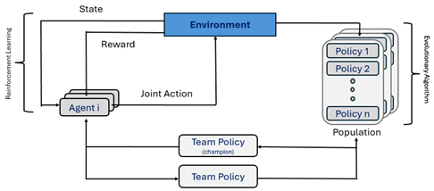

Coordinated Underwater Exploration with Multiagent Evolutionary Reinforcement Learning
Overview
In this class project, we explored multiagent evolutionary reinforcement learning (MERL) frameworks for training multiple policies in sparse reward environments. This work was inspired by connectivity maintenance problems for multi-robot teams. We define a simple sparse reward environment where a subset of the multiagent team must position themselves as intermediate communication relays in order for maximum rewards to be obtained from task locations. Using MERL, we are able to iteratively evolve and refine a set of policies that results in coordinated behaviors for this environment.
MERL Framework
MERL addresses sparse reward settings by training polices in a manner that iterates between reinforcement learning (RL) and an evolutionary algorithm (EA). The EA initializes a diverse population of team policies. We perform multiple policy rollouts in our training environment to evaluate the fitness of each (max performance). Next, the best-performing policy is applied in an RL setting to receive refined, dense training feedback before being returned to the EA population pool. This cycle repeats until convergence.
Multi-Headed Policy
We configure our team policy as a multi-headed policy in which each agent uses a shared trunk. The output of the trunk is provided to each agent's individual policy head. This structure allows the trunk to perform general, high-level environment processing before each agent's head provides fine-grained, unique behaviors. In training, the EA adjusts the weights of each aspect of the network while the RL loop refines only each agent's head. For further details on policy configuration and training, see the attached PDF at the top of the page.
Training Evaluations
We trained our policy with two dense RL reward functions to address the sparse environmental feedback. Our L1 reward function motivates agents to optimize their spacing between other agents and a central communication location. L2 rewards agents for moving towards incomplete tasks. While neither reward is directly aligned with the problem's overall global reward, our results show that the RL loop guides policies to higher rewards faster than the EA-only loop.